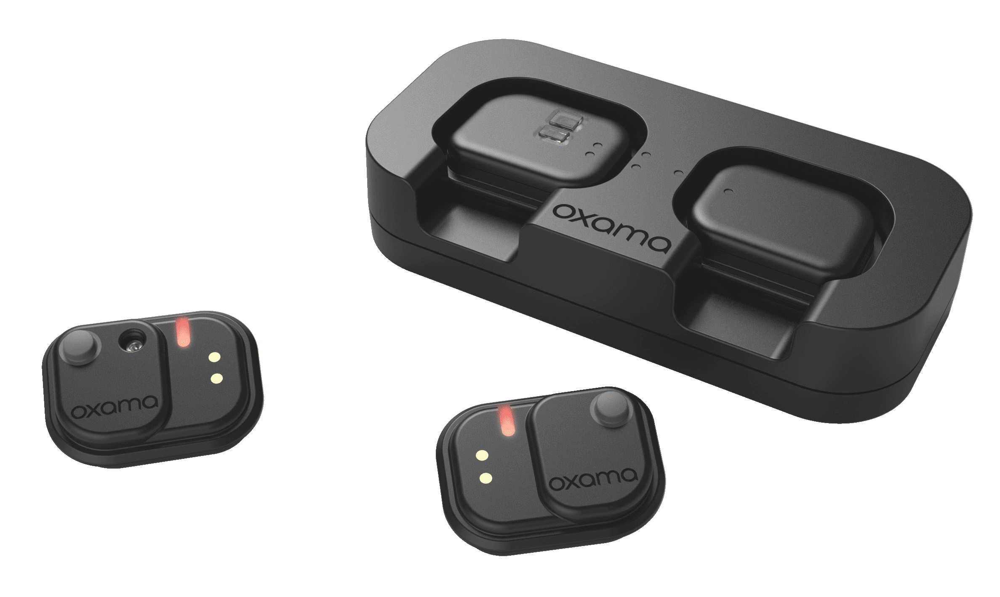
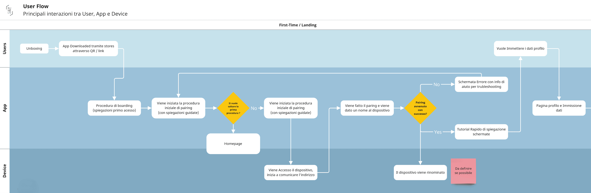
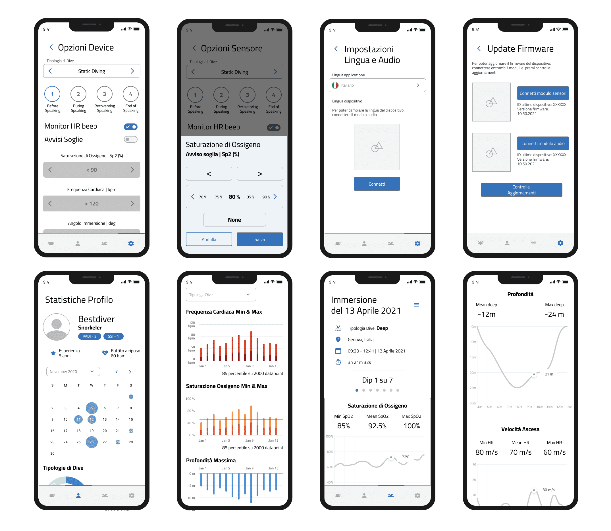
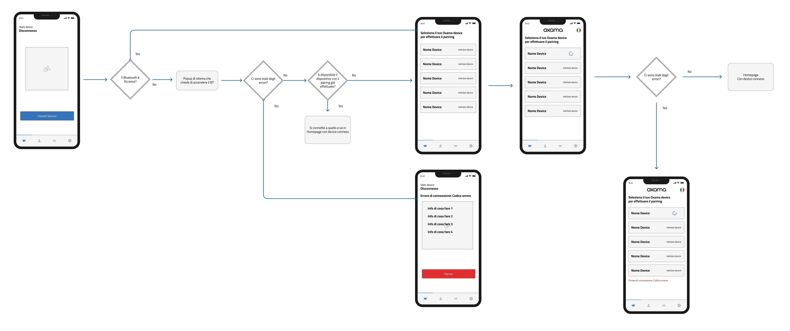
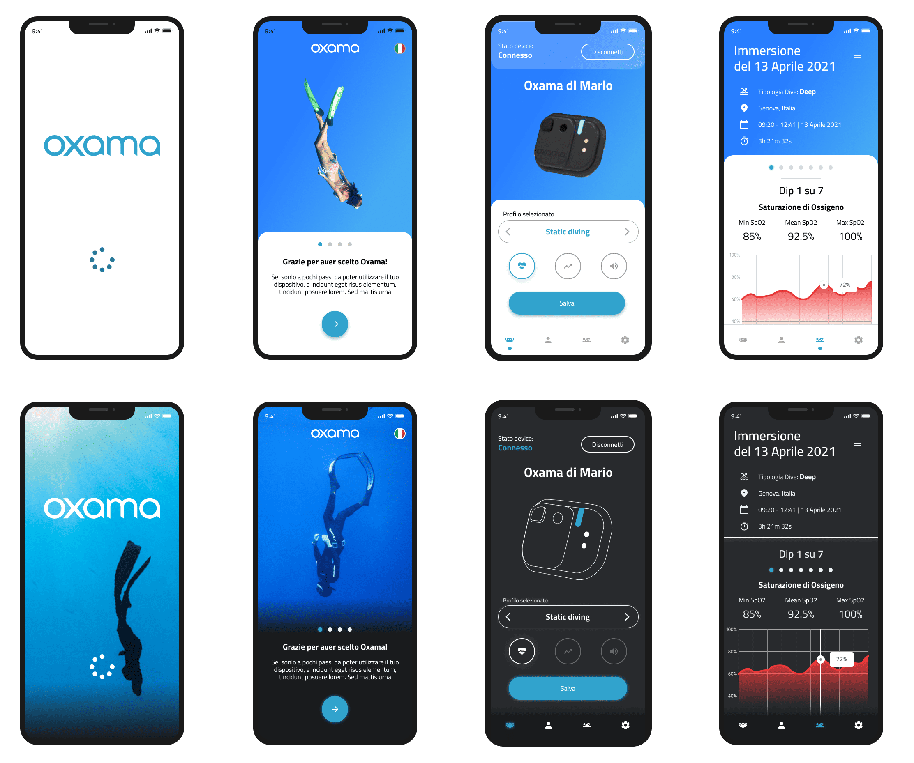
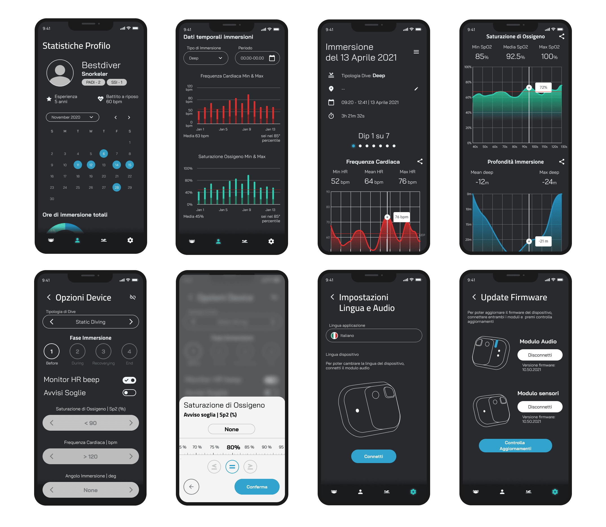

OXAMA

- Design Lead
- Product Designer
- Experience Designer
- Interaction & Visual Designer
The Oxama team introduced the first wearable speaking oximeter, combining biometric sensors and voice assistance to enhance freediving performance, enabling divers to push their limits safely. The client, a startup, had completed the hardware and was finalizing the firmware but needed a companion app and a defined user experience to fully realize the product's potential.
Our goal was to design a user-friendly app that seamlessly integrated with the device, offering freedivers an intuitive way to interact with their biometric data and manage device settings. A key challenge was creating a design that accounted for the remote context in which the app would often be used, such as on a boat, pre- and post-immersion, where users needed quick and reliable access to critical information.
Another major challenge involved the device's hardware restrictions, particularly when updating firmware or changing the device language. These processes required downloading language packs directly from the internet via the app, adding complexity to the user experience. The app had to ensure a smooth and simple process for managing these updates, despite the technical constraints.
This project demanded a solution that balanced technical constraints with usability, delivering an app that complemented the Oxama product while meeting user and client needs.

The design process was deeply informed by the expertise of the Oxama team, who were experienced divers. Their hands-on knowledge of the sport and familiarity with other devices on the market provided invaluable insights into the challenges and limitations users commonly faced. This perspective guided the creation of a user experience that not only met technical requirements but also addressed practical, real-world needs.
To define the app's core functionality, I started mapping detailed user flows that illustrated how freedivers would interact with the device and app across different scenarios. These included planning dives, reviewing biometric data, and managing device settings, both onshore and in remote locations such as boats. The interaction model emphasized efficiency and clarity, ensuring that users could use the app intuitively and access information quickly, even in demanding or time-sensitive situations.

I developed wireframes to visualize the structure and functionality of the app. These initial designs focused on key features such as dive planning, real-time data synchronization, and firmware or language updates. Early prototypes were closely shared with the Oxama team to validate the flows and gather feedback, leveraging their expertise. This iterative approach ensured the designs were aligned with both user expectations and the unique demands of the sport.

The app had to account for hardware limitations, particularly for firmware updates and language changes, which required downloading language packs over the internet. These constraints informed the interaction design, ensuring these processes were as seamless as possible while keeping the user experience intuitive. Clear visual cues and progress indicators were incorporated to guide users through these steps, minimizing frustration and errors.

After finalizing the wireframes and user flows, I transitioned to high-fidelity prototypes to create a functional and visually refined interface. These prototypes bridged the gap between concept and implementation, enabling the client and development team to visualize how the app would look and function. The goal was to maintain an intuitive user experience while elevating the design with a professional and modern aesthetic.
Before defining the visual style, I conducted a brief benchmark analysis of similar apps in the sports and health technology sectors. This research highlighted key trends and opportunities for differentiation. Multiple visual style options were proposed to the client, each aligned with Oxama's innovative brand identity. After a collaborative review, the client selected a clean and modern style that balanced professionalism with approachability. The chosen design featured a carefully curated color palette, typography that emphasized readability and clarity, and data presentation techniques that made biometric metrics and dive logs easy to interpret at a glance. Iconography and interactive elements were designed for consistency and responsiveness, ensuring seamless navigation throughout the app.

These high-fidelity prototypes served as a comprehensive reference for the development phase, ensuring the final product remained true to the envisioned design and user experience.
As the project moved toward the development phase, the next planned step was user testing in a diving pool environment. This phase would evaluate the app's functionality and usability with real users interacting with the actual device in a controlled setting. These tests were intended to provide critical insights for refining the app before its official release, ensuring it met the needs of freedivers and delivered a seamless experience.

The collaboration resulted in a polished, user-centered app that complemented Oxama's innovative hardware. By addressing user needs and technical constraints, the project helped the company deliver a complete product for the freediving community.